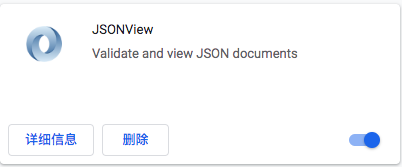
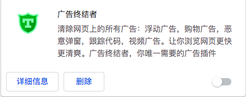
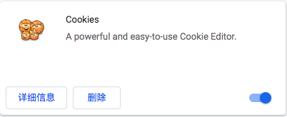
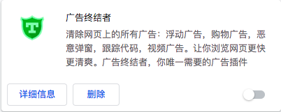
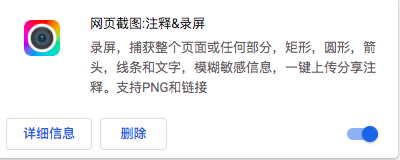
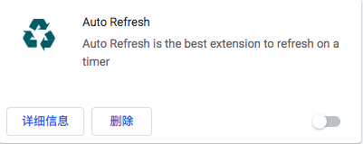
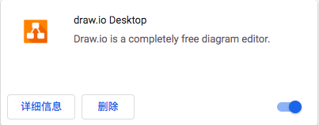

一 说明
这篇博文中,记录通过各种渠道收获的chrome插件,主要用于提升平时运维工作中的效率. 大部分是转载而来.
二 开发类插件
(一) JSONView
是一个方便查看 Json 结构的插件，展开，折叠，可以非常方便的查看接口返回数据. 当我们调试后台API时非常有用,因为我们后台API返回的结果几乎都是json格式,chrome开启这个插件 之后就能以更友好的方式展示后台返回的数据.

(二) Postman
相信开发者朋友一定知道这款插件，这是一款强大的 API & HTTP 请求调试工具，它不仅可以调试简单的 HTML、CSS 以及脚本等简单的网页基本信息，这款 Chrome 插件甚至还能发送几乎所有的 HTTP 请求，可谓是 Web 开发者的一大利器。

(三) Cookies
管理chrome的cookie

三 通用类插件
(一) 广告过滤
广告终结者. 清除网页上的所有广告：浮动广告，购物广告，恶意弹窗，跟踪代码，视频广告。让你浏览网页更快更清爽。广告终结者，你唯一需要的广告插件
WX20190829-172709

(二) 截图插件
网页截图:注释&录屏.
录屏，捕获整个页面或任何部分，矩形，圆形，箭头，线条和文字，模糊敏感信息，一键上传分享注释。支持PNG和链接

(三) 自动刷新网页
Auto Refresh
Auto Refresh is the best extension to refresh on a timer

（四） 画流程图
draw.io 是一个著名的在线画图网站,这个插件就是该网站的一个chrome插件,方便本地直接画图.
